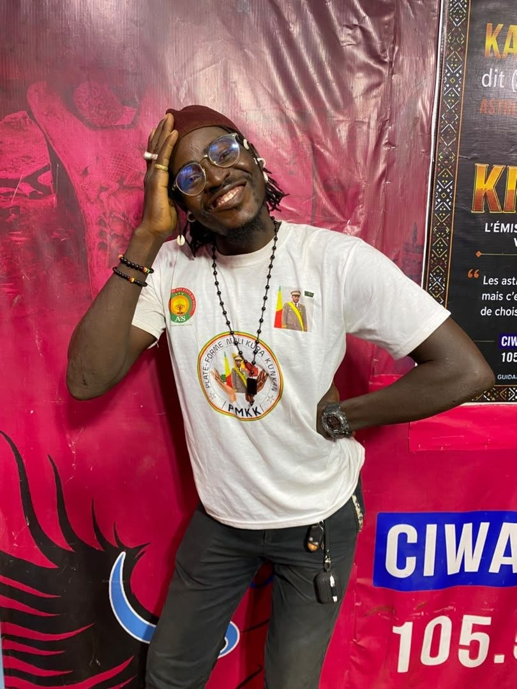

01
MATINCiwara Matin
08h00 — 09h00
RADIO CIWARARadio Ciwara 105.5 émettant depuis Bamako. Retrouvez l'information, la musique, la culture et la proximité au cœur de l'univers CIWARA MÉDIAS.
À L'ANTENNE
Le direct radio est prêt à être lancé.
Chargement des actualités de la rédaction.
08h00 — 09h00
RADIO CIWARA10h00 — 11h30
ACTUALITÉ11h30 — 13h00
PROXIMITÉLundi · 14h05 — 15h00
ÉCHANGELundi · 15h00 — 16h00
SPORT16h00 — 17h00
MUSIQUERetrouvez les rendez-vous d'information de Radio Ciwara.
Chroniques, musique, culture, société et sport.
Consultez les créneaux de la semaine.

Équipe Radio Ciwara — rôle à préciser

Équipe Radio Ciwara — rôles à préciser

Animatrice — Mouna Pourquoi

Équipe Radio Ciwara — rôle à préciser
Pour publicité, partenariat ou demande média, contactez Radio Ciwara.
Radio Ciwara 105.5 émet depuis Bamako. Pour les coordonnées non publiées dans les fichiers actuellement accessibles, aucun numéro ou email ne sera inventé.